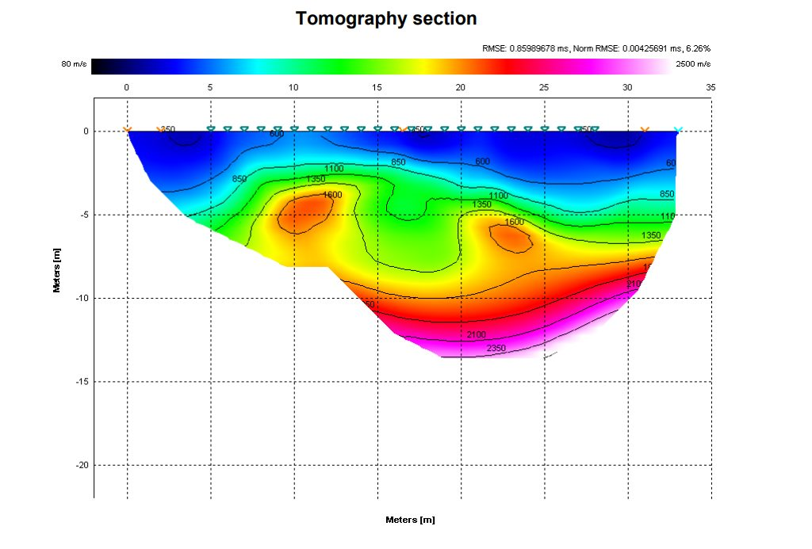

Servizi
Un supporto geologico completo, dalla fase di fattibilità fino al deposito degli elaborati e alla direzione lavori.
Relazioni geologiche e geotecniche
Gli elaborati che accompagnano il progetto strutturale e il titolo edilizio, redatti secondo il D.M. 17/01/2018 (NTC 2018) e la Circolare applicativa 2019.
Relazione geologica
Inquadramento geologico, geomorfologico, idrogeologico e sismico del sito; ricostruzione del modello geologico di riferimento sulla base delle indagini; valutazione della pericolosità geologica e della fattibilità dell'intervento.
Relazione geotecnica
Caratterizzazione fisico-meccanica dei terreni, definizione dei valori caratteristici dei parametri, modello geotecnico e verifiche di capacità portante su terreni e roccia: stato limite ultimo (SLU) ed esercizio (SLE), cedimenti assoluti e differenziali, distorsioni angolari.
Modello geologico, geotecnico e geofisico
Costruzione del modello del volume significativo (D.M. 17/01/18), sintesi dei dati di sondaggi, prove e geofisica, sezioni interpretative e parametri di progetto per il calcolo strutturale.
Fondazioni, scavi e consolidamenti
Scelta del piano di posa e della tipologia fondazionale, opere di sostegno agli scavi, verifica di stabilità locale e generale dei versanti, indicazioni per interventi di consolidamento e ottimizzazione dei terreni di fondazione.
Indagini sismiche
Misure eseguite direttamente in cantiere con sismografo di proprietà, per la classificazione sismica del sottosuolo e la caratterizzazione dinamica dei terreni.
MASW 1D e 2D
Analisi multicanale delle onde di superficie (Rayleigh) da sismica attiva, con sismografo a 24 bit effettivi e 24 geofoni verticali a 4,5 Hz. Restituisce il profilo delle onde di taglio VS, la VS,eq e la categoria di sottosuolo secondo le NTC 2018.
Microtremori HVSR
Rapporto spettrale orizzontale/verticale (tecnica di Nakamura) con sismografo tridirezionale SR04 Geobox, per determinare la frequenza fondamentale di risonanza del sito e verificare possibili fenomeni di doppia risonanza con la struttura.
Tomografia a rifrazione sismica
Ricostruzione della sezione delle velocità delle onde P (ed eventualmente SH) lungo il profilo e con la profondità. Dettaglio qui sotto.
Modello geofisico integrato
Cross-check tra i diversi metodi (MASW, HVSR, rifrazione) per un modello del sottosuolo coerente e verificabile.
Indagini geoarcheologiche
Supporto geofisico e geologico a indagini preventive di archeologia, ricostruzione di paleosuperfici e paleoalvei.

Tomografia a rifrazione sismica (SRT)
La tomografia a rifrazione sismica (SRT, Seismic Refraction Tomography) è una tecnica di indagine che permette di ricostruire la costituzione del sottosuolo in modo non invasivo, trasformando i tempi di propagazione delle onde elastiche in una «sezione» che mostra come cambiano i materiali con la profondità e lungo il profilo.
Durante la prova si generano onde controllate e si registrano i segnali con sensori disposti a terra; l'elaborazione produce una mappa di velocità: valori più bassi sono tipici di terreni soffici, rimaneggiati o alterati, mentre valori più alti indicano strati più addensati e competenti.
Questa informazione è preziosa perché consente di:
- stimare lo spessore delle coperture superficiali;
- individuare discontinuità e lenti più deboli;
- riconoscere la profondità del livello rigido utile per fondazioni e scavi;
- supportare la valutazione della risposta sismica locale.
Prove e indagini in sito
Prove penetrometriche dinamiche
Stima della resistenza e della compattezza dei terreni, ricostruzione stratigrafica speditiva e correlazione con i parametri geotecnici, mediante penetrometro dinamico di proprietà.
Prove di permeabilità e falda
Prove a carico variabile in foro o in pozzetto per la stima del coefficiente di permeabilità; rilevamento della presenza, dei caratteri e delle escursioni di livello della falda idrica sotterranea.
Pozzetti e trincee esplorative
Scavi di ispezione per il riconoscimento diretto della successione, il prelievo di campioni e la verifica della quota della falda.
Assistenza ai sondaggi
Studio del programma di indagini geognostiche, direzione e assistenza alle perforazioni, descrizione delle carote, programmazione di prove SPT e prelievi, installazione di piezometri.
Risposta sismica locale e liquefazione
Risposta sismica locale (RSL)
Analisi monodimensionale della propagazione del moto sismico, con definizione degli spettri di risposta di sito quando la classificazione per categorie non è sufficiente o è più cautelativo un approccio specifico.
Verifica alla liquefazione
Valutazione del potenziale di liquefazione dei terreni sabbiosi saturi con metodi da prove in sito (VS, penetrometriche), calcolo dell'indice del potenziale di liquefazione e dei cedimenti attesi (NTC 2018).
Microzonazione sismica
Studi di supporto alla pianificazione (livelli 1–3) e coerenza tra la relazione di progetto e gli studi di MS comunali.
Parametri per l'analisi strutturale
Fornitura di spettri, accelerazioni di picco e parametri di deformabilità dei terreni per l'interazione terreno-struttura.
Idraulica e gestione delle acque meteoriche
Invarianza idraulica e idrologica
Calcolo delle portate, dimensionamento dei volumi di laminazione e dei dispositivi di invarianza, relazione e asseverazione secondo il Regolamento Regionale della Lombardia.
Studi di compatibilità idraulica
Verifica di compatibilità degli interventi con il reticolo idrico e con la pericolosità idraulica (PAI / PGRA), a supporto di piani e permessi.
Idrogeologia
Studi sulla circolazione idrica sotterranea, soggiacenza e oscillazione della falda, valutazioni per scarichi e opere interrate.
Drenaggio sostenibile
Indicazioni per sistemi di infiltrazione, pavimentazioni drenanti e tetti verdi, in coerenza con la permeabilità reale dei terreni.
Territorio e consulenze
Componente geologica degli strumenti urbanistici
Redazione e aggiornamento della componente geologica, idrogeologica e sismica di PGT e varianti, carte di fattibilità.
Direzione lavori geologica
Controllo in corso d'opera di scavi, fondazioni e opere di sostegno, verifica della corrispondenza tra previsione e condizioni reali.
Consulenze tecniche e legali
Assistenza tecnica in contenziosi (CTU / CTP) e consulenze legali in ambito geologico-ambientale: dissesti, fondazioni, danni da acque, movimenti franosi.
Due diligence geologica
Valutazione dei vincoli e delle criticità geologiche di un'area in fase di acquisizione o di sviluppo immobiliare.
Recupero del territorio e attività estrattive
Supporto geologico a progetti di cava e a interventi di recupero e riqualificazione ambientale.
Strutture civili, rurali e industriali
Consulenza geologica per l'ingegneria civile, con particolare riguardo alle indagini ed esplorazioni del sottosuolo per fondazioni dirette e speciali.
Non sai quali indagini servono per il tuo intervento?
Inviami una descrizione del progetto e l'indirizzo: dopo un primo esame ti propongo il percorso più efficiente, con tempi e costi.